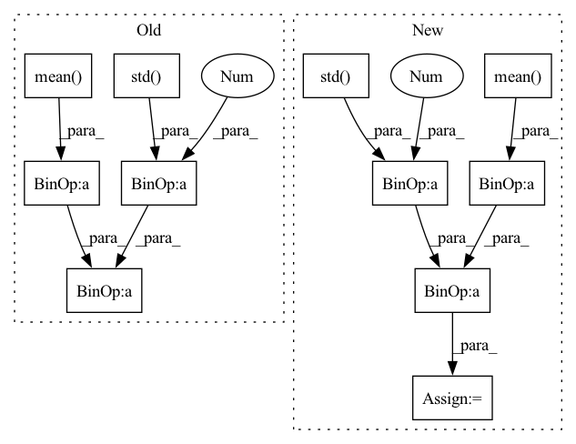

Pattern ID :30389
Before Change
// Normalize advantage (not present in the original implementation)
if self.normalize_advantage:
advantages = (rollout_data.advantages - rollout_data.advantages.mean() ) / (rollout_data.advantages.std() + 1e-8 )
// Policy gradient loss
policy_loss = -(advantages * log_prob).mean()After Change
// Normalize advantage (not present in the original implementation)
advantages = rollout_data.advantages
if self.normalize_advantage:
advantages = (advantages - advantages.mean() ) / (advantages.std() + 1e-8 )
// Policy gradient loss
policy_loss = -(advantages * log_prob).mean()In pattern: SUPERPATTERN
Frequency: 3
Non-data size: 11
Instances Fragment ID: 89932540
Project Name: dlr-rm/stable-baselines3
Commit Name: f159a4a9f261737db4427de072bb189056604731
Time: 2020-03-10
Author: antonin.raffin@dlr.de
File Name: torchy_baselines/a2c/a2c.py
M Class Name: A2C
N Class Name: A2C
M Method Name: train(3)
N Method Name: train(3)
M Parent Class: PPO
N Parent Class: PPO
M File Name: torchy_baselines/a2c/a2c.py
N File Name: torchy_baselines/a2c/a2c.py
M Start Line: 88
M End Line: 101
N Start Line: 88
N End Line: 102
Before Change
advantage_lst.reverse()
advantage_ = torch.tensor(advantage_lst, dtype=torch.float).to(self.device)
returns_ = advantage_ + old_value_
advantage_ = (advantage_ - advantage_.mean() )/ (advantage_.std()+1e-3 )
for i in range(self.K_epoch):
for state,action,reward,next_state,done_mask,old_log_prob,advantage,return_,old_value \
in self.data.choose_mini_batch(self.minibatch_size ,state_, action_, reward_, next_state_, done_mask_, \After Change
advantage_lst.reverse()
advantages = torch.tensor(advantage_lst, dtype=torch.float).to(self.device)
returns = advantages + old_values
advantages = (advantages - advantages.mean() )/ (advantages.std()+1e-3 )
for i in range(self.K_epoch):
for state,action,reward,next_state,done_mask,old_log_prob,advantage,return_,old_value \
in self.data.choose_mini_batch(self.minibatch_size, states, actions, rewards, next_states, done_masks, \ Fragment ID: 89932542
Project Name: seolhokim/mujoco-pytorch
Commit Name: 87e9db1820bc2af3e9af6d55a55dbe4e6dd00bf4
Time: 2021-05-09
Author: kilmya1@naver.com
File Name: agent.py
M Class Name: PPO
N Class Name: PPO
M Method Name: train_net(3)
N Method Name: train_net(3)
M Parent Class: nn.Module
N Parent Class: nn.Module
M File Name: agent.py
N File Name: agent.py
M Start Line: 41
M End Line: 60
N Start Line: 42
N End Line: 70
Before Change
values, log_prob, entropy = self.policy.evaluate_actions(rollout_data.observations, actions)
values = values.flatten()
// Normalize advantage
advantages = (rollout_data.advantages - rollout_data.advantages.mean() ) / (
rollout_data.advantages.std() + 1e-8 )
// ratio between old and new policy, should be one at the first iteration
ratio = th.exp(log_prob - rollout_data.old_log_prob)After Change
values = values.flatten()
// Normalize advantage
advantages = rollout_data.advantages
advantages = (advantages - advantages.mean() ) / (advantages.std() + 1e-8 )
// ratio between old and new policy, should be one at the first iteration
ratio = th.exp(log_prob - rollout_data.old_log_prob) Fragment ID: 89932537
Project Name: dlr-rm/stable-baselines3
Commit Name: 70e601c03cdb0135438d621a19f5f2fcf514de18
Time: 2020-03-12
Author: antonin.raffin@dlr.de
File Name: torchy_baselines/ppo/ppo.py
M Class Name: PPO
N Class Name: PPO
M Method Name: train(3)
N Method Name: train(3)
M Parent Class: BaseRLModel
N Parent Class: BaseRLModel
M File Name: torchy_baselines/ppo/ppo.py
N File Name: torchy_baselines/ppo/ppo.py
M Start Line: 213
M End Line: 230
N Start Line: 213
N End Line: 230